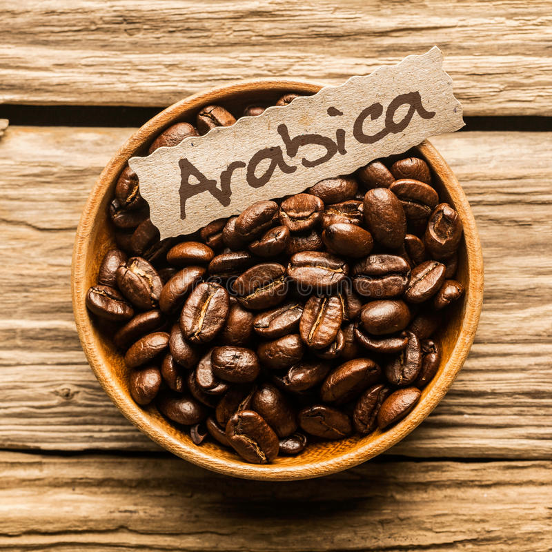

Enjoy Coffee and Music
Centennial point coffee house offers a special music experience achieved through high-end brewing and premium ingredients. Located on the Progress lane with panoramic views of the Centennial college schools and buildings. The customers get a deeper and more sophisticated coffee experience.
- Coffee is the favorite drink of many in the world
- Coffee is an incredibly loved drink that fuels people everywhere
- Our coffee shop music can be viewed as an eclectic genre of its own
- There's no doubt that coffee and music make for an excellent pairing
- What is Coffee?
- Coffee is a drink prepared from roasted coffee beans. Darkly colored, bitter, and slightly acidic, coffee has a stimulating effect on humans, primarily due to its caffeine content. It is the most popular hot drink in the world.
- How is the coffee shop furnished?
- Coffee shop is furnished with rows of cushioned chairs and sofa like seaters with the special kids chairs and a spot for the music artists to perform. Your luxury camping experience includes different flavors of coffee and a jazz and rock music. restroom facilities are located in the shop.
- What is Arabica Coffee?
- Arabica is the most popular type of coffee, hands down. Depending on who you ask, many coffee enthusiasts prefer using Arabica beans due to its taste. Typically used for black coffee, Arabica beans have a sweeter, more complex flavor that you can drink straight is offered in ours shop. 


Centennial Point Coffee House
943 Progress Avenue Scarborough, ON M1G 3T8
943 Progress Avenue Scarborough, ON M1G 3T8